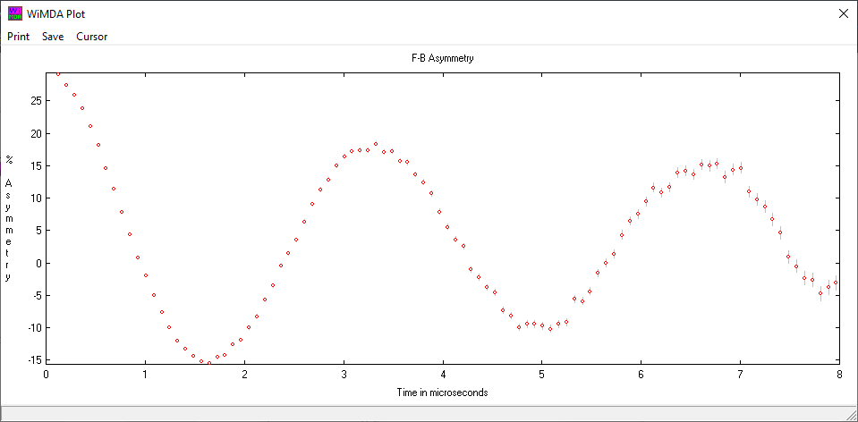
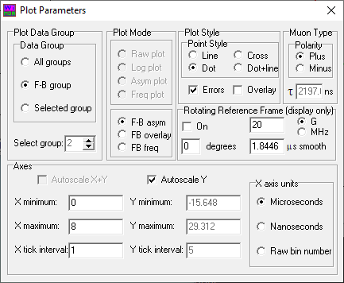

Plotting
Plot Window
To launch the main plot window, go to the main menu and click ‘Plot’ then ‘Data’. A window will come up which looks like the following:
{kind=link}
Saving the plot
This plot can be saved by clicking the ‘Save’ button at the top, which launches a menu allowing one to save the data in this plot, save the data and the fit (in one file), or just the fit. If you have a lot of successive runs you wish to save, click ‘Batch save data’ and type in the first and last run you want to save. By default, data will be saved in the analysis directory, and will be saved in a plain text format suitable for most other plotting and fitting programs. If you don’t want to save all the data in the plot, the x-range can be set with the relevant option in the menu.
Cursor stuff?
Plot Parameters
The plot can be changed with the plot parameters window, which can be launched from the WiMDA main menu by clicking ‘Plot’ and then ‘Parameters’. The window looks like the following:
{kind=link}
Note
After making changes in this window, you may need to click on the plot window for it to update
Plot data group
All groups Plot each group as a separate graph
F-B group Plot the forward and backwards group (use this for F/B asymmetry)
Selected group Plot only the group specified in the box below this radio button
Plot mode
- When plotting single groups, you have the following options:
Raw plot Plot the raw number of counts as a function of time
Log plot As raw plot, but with a logarithmic (base 10) scale
Asym plot Plot the raw counts multiplied by \(\exp(t/\tau_\mu)\).
Freq plot Plot the frequency spectrum (use the Fourier window to change the FFT parameters)
- When plotting in F-B mode, you have the following additional options:
F-B asym Plot the forwards-backwards asymmetry
F-B overlay Plot the forwards and backwards counts on the same graph, with the exponential decay removed by multiplying the data by \(\exp(t/\tau_\mu)\)
F-B freq Plot the fourier spectrum of the F-B asymmetry (use the Fourier window to change the FFT parameters)
Plot style
This area lets you change the style of the points, and allows you to not show the error bars. The ‘Overlay’ option keeps the current data on the graph when using the ‘LOAD’ buttons on the main menu to change between runs.
Note
These options only change how the data is displayed – when analysing the data, only the current run will be fitted.
Muon Type
This lets you change the decay lifetime of the muon, which is useful for \(\mu^-\) SR experiments. To do this, select ‘Minus’ and then change the lifetime in the box next to \(\tau\).
Rotating Reference Frame (RRF)
The rotating reference frame transformation is useful for analysing high frequency signals. This feature allows one to transform the data from the lab frame into a frame which rotates at a frequency close to (but not quite) the muon precession frequency, which makes high-frequency relaxation processes easier to observe.
Specifically, the RRF transformation with a reference frame frequency of \(\omega_{\rm RRF}\) and phase of \(\phi\) transforms the asymmetry data in the lab frame (\(A_{\rm lab}\)) to the rotating frame by \(A_{\rm RRF}(t)=A_{\rm lab}\cos(\omega_{\rm RRF}t+\phi)\). \(\omega_{\rm RRF}\) and \(\phi\) are set by top-right and bottom-left boxes of the Rotating Reference Frame panel respectively, and the box at the bottom-right (with the label ‘µs smooth’) smooths out the points by averaging over the specified time period.
Note
In WiMDA, this transformation is only applied visually – it is not possible to fit RRF data.
Axes
This section controls the axes limits and ticks on the plot. Ticking the ‘Autoscale’ options adjusts the axes so that all of the data and errors are visible on the plot. The units of the x-axis can be changed using the radio buttons on the right-hand side of the panel.
Hint
Ticking ‘Autoscale X+Y’ often results in asymmetry plots having too large a Y-axis range due to the large errors on the data at late times. A good starting point is to set the X-axis maximum to 8 µs, and autoscaling Y.
Note
Changing the axis limits does not affect the range of data which will be fitted – it is only possible to change this in the Analyse window.